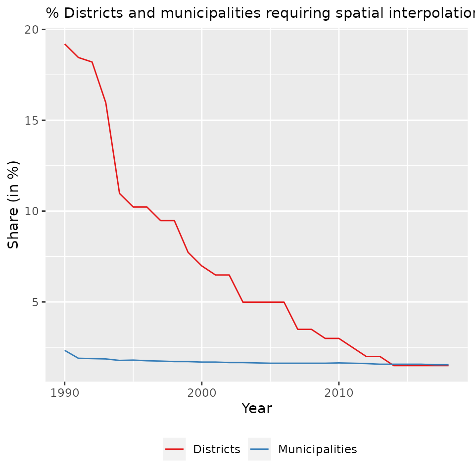
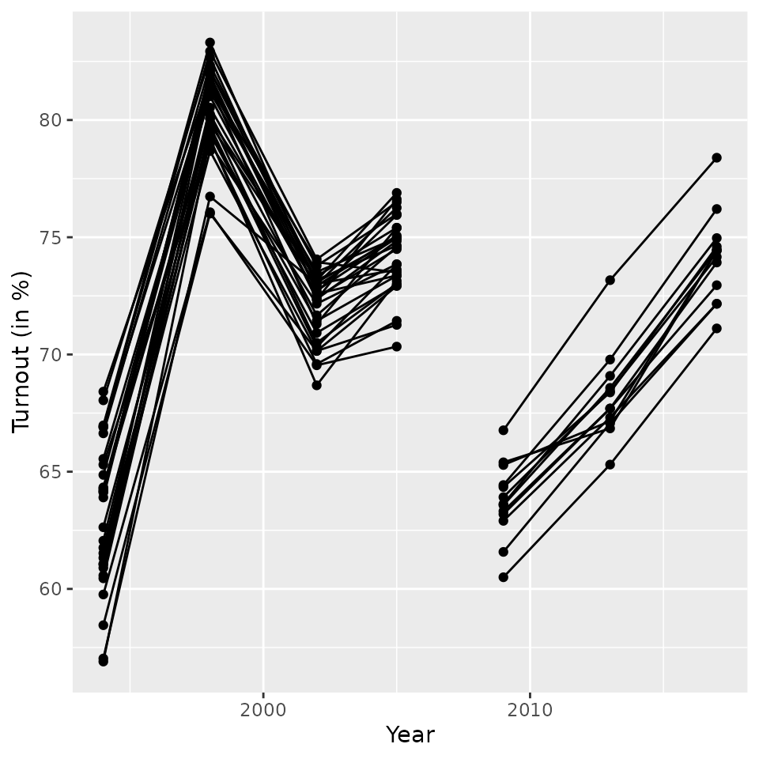
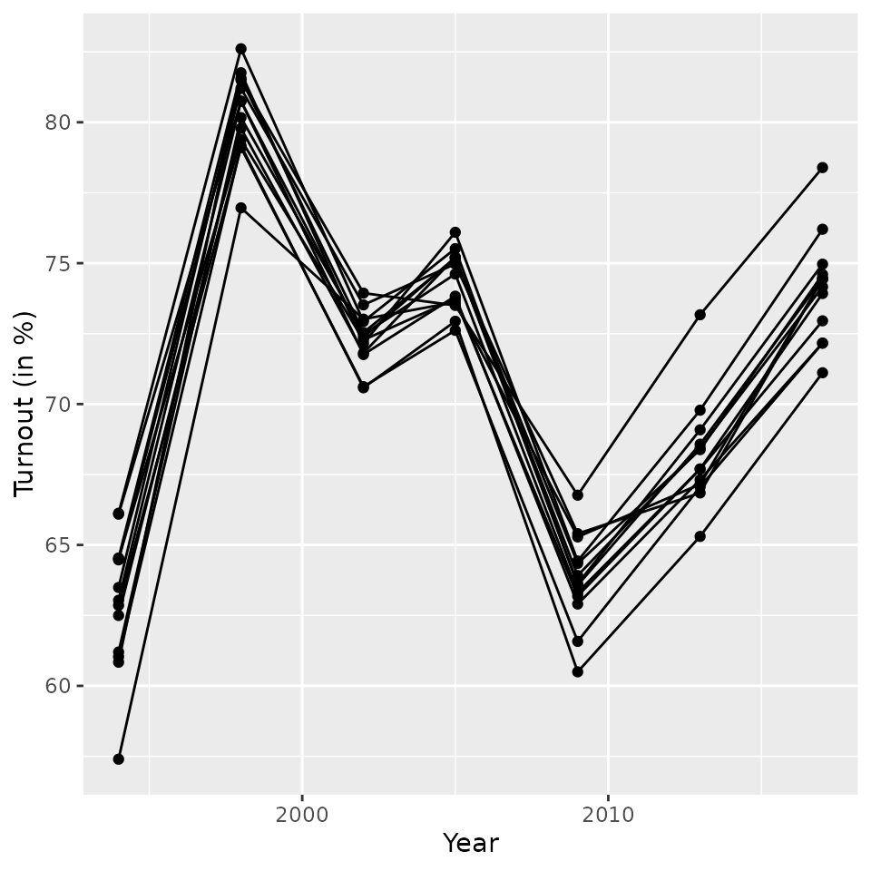

ags.RmdConstructing time series for Germany’s municipalities and districts is often challenging as borders of these units change over time. Some of today’s districts are the product of multiple districts that merged and got split up in the past (the same applies to municipalities but to a lesser extent). When district and municipality borders change significantly, the district and municipality identifiers (Amtlicher Gemeindeschlüssel, AGS) change too.
To compile long time series for municipalities and districts, the Federal Office for Building and Regional Planning (Bundesinstitut für Bau-, Stadt- und Raumforschung, BBSR) has constructed annual crosswalks starting in 1990. These crosswalks map one year’s set of district (municipality) identifiers to later year’s identifiers and provide weights to perform area (or population) weighted interpolation for count data.
The Amtlicher Gemeindeschlüssel (AGS) is a 8-digit code to identify a municipality (Gemeinde) and other regional units. The AGS has a hierarchical structure with the following components:
For example, the municipality Dierfeld in Rheinland-Pfalz has the AGS 07231021:
The five-digit version is sometimes referred to as Kreisschlüssel (district code) and the first two digits as Bundeslandschüssel (Land code). The Bundeslandschüssel are as follows:
Area and population weighted interpolation becomes necessary when the territory of a unit (say A) is allocated to multiple other units (say C and D). While area weighted interpolation allocates A’s count proportionally to the area that goes from A to C and from A to D, population weighted interpolation uses the relative population size of A that goes to C and D. If all of A’s territory or population goes to either C or D, the interpolation weight is 1.
Area and population weighted interpolation is simple, but the estimates come with some estimation error. This error is larger the more the underlying data are not distributed uniformly within unit A. Fortunately, in the majority of the territorial reforms since 1990, units are allocated to another unit as a whole. In these instances, there is no estimation error.
The figure below shows the annual percentage share of today’s districts (n=401) and municipalities (n=11007) for which spatial interpolation is necessary to construct a time series. More specifically, the figure shows the percentage share of units for which the average (area-based) interpolation weight is not exactly 1 in every year since 1990.

The package’s main function is xwalk_ags. To illustrate how this function works, we use federal election data from Saxony that are part of the package. The dataset includes the number of voters and valid votes on the district level between 1994 and 2017. The figure below shows turnout trends based on the data. There is a break in the time series between 2005 and 2009 when the number of districts in Saxony declined from 29 and 13 and all district identifiers changed.
data(btw_sn)
ggplot(btw_sn, aes(year, (valid/voters)*(100), group=district)) +
geom_line() + geom_point() + ylab("Turnout (in %)") + xlab("Year")
To construct continuous time series on the number of voters and votes, we use the function xwalk_ags. It takes the input data, joins the crosswalk xwalk with the data by ags and time and then proceeds with the area or population interpolation depending on the parameter weight. If variables are left undefined the merged dataset will be returned instead.
btw_sn_ags20 <- xwalk_ags(
data=btw_sn,
ags="district",
time="year",
xwalk="xd20",
variables=c("voters", "valid"),
weight="pop")
#>
#> Total number of obs: 155
#>
#> Excluded obs:
#> id/time NA AGS unk Year unk
#> 0 0 0
#>
#> Matched obs:
#> exact fuzzy
#> 126 NA
#>
#> Unmatched obs: 29The output of xwalk_ags provides information on the number of excluded observations as well as the number of matched and unmatched observations. Unmatched observations are the consequence of values in ags that appear at least once in the crosswalk but not in the year when they are used in the data. More specifically, the 29 unmatched observations reported above are from the 1994 election which was preceded by a territorial reform in August 1994 reducing the number of districts from 54 to 29. The 29 new district identifiers only appear in the 1995 crosswalk for the first time.
To address this issue one can set fuzzy_time=TRUE. With fuzzy matching enabled, the data and the crosswalk are matched exactly by ags and as best as possible on time. The output of the function call below suggests that there are no unmatched observations left then. The subsequent figure displays the turnout trends across today’s district (\(n=13\)) and all seven elections.
btw_sn_ags20 <- xwalk_ags(
data=btw_sn,
ags="district",
time="year",
xwalk="xd20",
variables=c("voters", "valid"),
fuzzy_time=TRUE,
weight="pop")
#>
#> Total number of obs: 155
#>
#> Excluded obs:
#> id/time NA AGS unk Year unk
#> 0 0 0
#>
#> Matched obs:
#> exact fuzzy
#> 126 29
#>
#> Unmatched obs: 0
ggplot(btw_sn_ags20, aes(year, (valid/voters)*100, group=ags20)) +
geom_line() + geom_point() + ylab("Turnout (in %)") + xlab("Year") 
Milbert, Antonia. 2010. Gebietsreformen–politische Entscheidungen und Folgen für die Statistik. BBSR-Berichte kompakt 6/2010. Bundesinsitut für Bau-, Stadt-und Raumfoschung.
Glossar Statistischer Fachbegriffe - Glossary of Statistical Terms. Deutsch - Englisch | Englisch - Deutsch.. Wiesbaden: Statistisches Bundesam 2013.